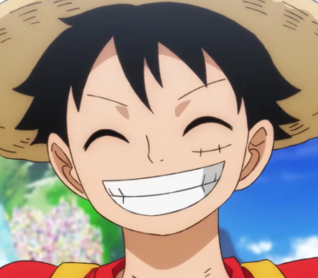
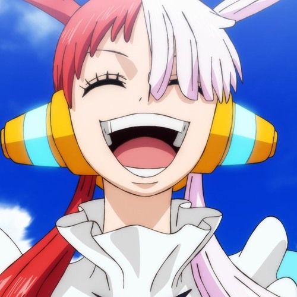
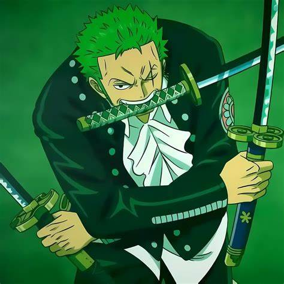
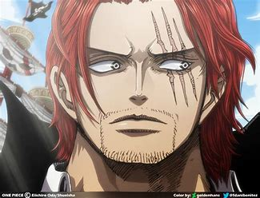

| Character image |
Character |
Character info |
|  |
Monkey D. Luffy |
Head of the Straw hat pirates who currently has a bounty of 3 Billion. Among all the characters in the movie, I really love Luffy for his kind actions to saving Uta, even though she has done something horrible
|
 |
Tony Tony Chopper |
Not shown as much in the movie but still remains as one of my favorite characters, the doctor of the Straw Hat pirates!
|
|  |
Uta |
The antagonist of One Piece Red with the root cause of her intentions to be horrible. Sad background and sad ending because of Uta. (I also very much love her vocals!)
|
|  |
Roronoa Zoro |
Roronoa Zoro, one of the greatest swordsman in the world and also one of the first characters that peaked my interest in the main story! |
|  |
Shanks |
Was shown in the end of the movie. He plays a role of inspiration to Luffy and Uta and also the cause of Uta's sad past, but he doesn't mean harm!
|